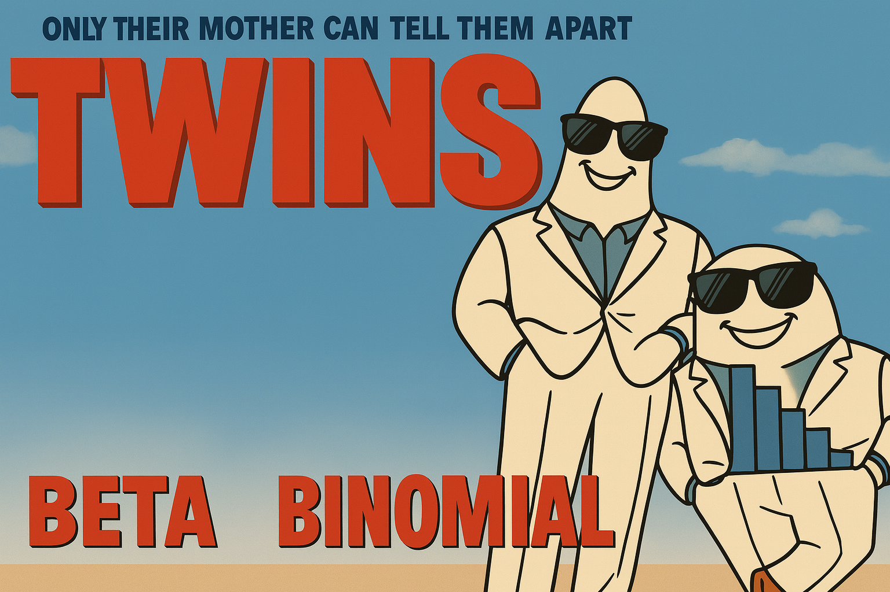

In experimentation we often estimate conversion rates or event probabilities. Understanding when to apply a Binomial model versus a Beta model is important for Significance (p-values) and Bayesian (credible intervals) analysis.
Author
Russ Zaliznyak
Published
December 9, 2025

Introduction
In experimentation we often estimate conversion rates or event probabilities. Understanding when to apply a Binomial model versus a Beta model is important for Significance (p-values) and Bayesian (credible intervals) analysis.
Below we present the formal definitions of our distributions, but will later run simulations to build our intuition for the Beta and Binomial Distribution.
Formulation
Let’s spend a few minutes on the “tough” stuff: a side-by-side comparison of Binomial Distribution vs Beta Distribution. Both distributions arise from the same underlying relationship — one models outcomes given a probability, and the other models the probability itself given outcomes.
Binomial
\[
P(X = k \mid n, p) = \binom{n}{k} p^{k} (1 - p)^{n - k}
\]
\[
\binom{n}{k}
= \frac{n!}{k!(n - k)!}
\]
Purpose
Model the probability of observing k successes in n independent Bernoulli trials,
where each trial has success probability p.
Example
Given assumption that p = 0.50, what is the probability of generating 525 or more conversions out of 1,000 samples?
The 95% credible interval from the Beta distribution represents where the true rate most likely lies given our data.
Replace With Normal
Both distributions can be well approximated with the Normal Distribution because of CLT. Note: The Normal approximation breaks down when n is small or when p is near 0 or 1, where the distributions become skewed.
[P-value with Normal Dist]
from numpy.random import normalfrom numpy import where, meanimport plotly.graph_objects as go# Create 1 Million Simulations each with# n = trials and p = null_ratemu = trials * null_ratesigma = ( trials * null_rate * (1- null_rate)) **0.5control_simulated_experiments = ( np.random.normal( loc=mu, scale=sigma, size=NUMBER_SIMULATIONS, ))p_value = mean( where( control_simulated_experiments>= conversions,1,0, ))fig = plot_histogram( control_simulated_experiments, x_symbol="conversions", highlight_tails="right", tail_alpha=p_value,)fig.show()
To perform an analogous analysis for the difference of two proportions, we model the difference in # of conversions and delta-to-control using the difference of our simulations for treatment and control groups.
This property allows the model to evolve over time — today’s posterior becomes tomorrow’s prior,
making the Beta approach ideal for iterative experiments or streaming data.
Key Takeaways
The Binomial distribution quantifies how surprising the observed data are under a fixed \(p_0\), while the Beta distribution estimates which values of \(p\) are most plausible given the outcomes.
Under large-sample conditions, both are well-approximated by the Normal distribution, though this breaks down when \(n\) is small or \(p\) is near 0 or 1.
The Beta model’s ability to update priors as new data arrive makes it especially useful for iterative experiments or streaming environments, where today’s posterior becomes tomorrow’s prior.
Future Topics
Request future training sessions: Bayesian Priors, Analyzing Continuous Data, SRM, CUPED, and other AB Testing topics.
Source Code
---title: "Beta vs Binomial Distribution"subtitle: "Understand the Difference Using Simulations"author: "Russ Zaliznyak"date: "2025-12-09"description: > In experimentation we often estimate conversion rates or event probabilities. Understanding when to apply a Binomial model versus a Beta model is important for Significance (p-values) and Bayesian (credible intervals) analysis.categories: [AB Testing, Distributions, Bayesian, Simulation]execute: echo: false---{style="height: 400px;"}# IntroductionIn experimentation we often estimate conversion rates or event probabilities. Understanding when to apply a Binomial model versus a Beta model is important for Significance (p-values) and Bayesian (credible intervals) analysis.Below we present the formal definitions of our distributions, but will later run simulations to build our intuition for the Beta and Binomial Distribution. # FormulationLet's spend a few minutes on the "tough" stuff: a side-by-side comparison of _Binomial Distribution_ vs _Beta Distribution_. Both distributions arise from the same underlying relationship — one models outcomes given a probability, and the other models the probability itself given outcomes.:::: {.columns style="font-size: 100%;"}::: {.column width="50%;"}<b><h><center>Binomial</b></center></h>$$P(X = k \mid n, p) = \binom{n}{k} p^{k} (1 - p)^{n - k}$$$$\binom{n}{k}= \frac{n!}{k!(n - k)!}$$::: {.callout-note collapse="false" icon="" title="<span style='font-size:1.3em;'>Purpose</span>" style="width: 95%;"}::: {style="width: 95%; font-size:117%"} Model the probability of observing *k* successes in *n* independent Bernoulli trials, where each trial has success probability *p*.::::::::: {.callout-tip collapse="false" icon="" title="<span style='font-size:1.3em;'>Example</span>" style="width: 95%;"}::: {style="width: 95%; font-size:117%"} **Given assumption that _`p`_ = 0.50**, what is the probability of generating 525 or more conversions out of 1,000 samples?:::::::::::: {.column width="50%;"}<b><h><center>Beta</b></center></h>$$f(p \mid \alpha, \beta)= \frac{1}{B(\alpha, \beta)} \, p^{\alpha - 1} (1 - p)^{\beta - 1},$$$$B(\alpha, \beta) = \int_0^1 t^{\alpha - 1} (1 - t)^{\beta - 1} \, dt= \frac{\Gamma(\alpha)\Gamma(\beta)}{\Gamma(\alpha + \beta)}.$$::: {.callout-note collapse="false" icon="" title="<span style='font-size:1.3em;'>Purpose</span>" style="width: 95%;"}::: {style="width: 95%; font-size:117%"} Describe the probability of different values of the success parameter *p*, given *α* successes and *β* failures in an experiment.::::::::: {.callout-tip collapse="false" icon="" title="<span style='font-size:1.3em;'>Example</span>" style="width: 95%;"}::: {style="width: 95%; font-size:117%"} **Given 525 conversions out of 1,000 samples**, what are the values of **_`p`_** that could have generated such a test result?:::::::::::::Use the **Binomial** when assessing how likely your observed data are under a hypothesis; use the **Beta** when estimating the underlying conversion rate.# Sim CodeNow we analyze the **same** experiment with _Binomial_ and _Beta_ distributions. - The _binomial_ will be used to estimate the _likelihood_ of our outcome (p-value).- The _beta_ will be used to estimate our _posterior distribution_ of conversion rates.:::: {.columns style="font-size: 100%;"}::: {.column width="50%;"}```{python}#| code-summary: "<b>[Function to plot histograms]</b>"#| echo: true#| code-fold: trueimport numpy as npimport plotly.graph_objects as godef plot_histogram( data, bins=40, title=None, color="royalblue", opacity=0.7, normalize=False, show_yaxis=True, x_symbol="p", show_mean=False, mean_line_color="black", mean_line_dash="dash", is_rate=False, highlight_tails=None, # "left", "right", or "both" tail_alpha=0.05, # proportion per tail (e.g., 0.05 → 5%) tail_color="crimson",):""" Plotly histogram with optional mean line, tail highlighting, and CDF-based hover. """# Compute histogram and CDF hist, edges = np.histogram( data, bins=bins, density=normalize, ) centers =0.5* ( edges[1:] + edges[:-1] ) cdf = np.cumsum(hist) cdf = ( cdf / cdf[-1] ) # normalize to 1 mean_value = np.mean(data)# Tail cutoffs left_cut = ( np.quantile(data, tail_alpha)if highlight_tailsin ["left", "both"]elseNone ) right_cut = ( np.quantile( data, 1- tail_alpha )if highlight_tailsin ["right", "both"]elseNone )# Assign colors per bar colors = np.full_like( centers, color, dtype=object )if highlight_tails:if left_cut isnotNone: colors[ centers <= left_cut ] = tail_colorif right_cut isnotNone: colors[ centers >= right_cut ] = tail_color# Hover templateif is_rate: hovertemplate = (f"P({x_symbol} < "+"%{customdata[0]:.2%})"+" = %{customdata[1]:.1%}<extra></extra>" )else: hovertemplate = (f"P({x_symbol} < "+"%{customdata[0]:.2f})"+" = %{customdata[1]:.1%}<extra></extra>" )# Single bar trace (no overlap) fig = go.Figure() fig.add_trace( go.Bar( x=centers, y=hist, marker_color=colors, opacity=opacity, customdata=np.column_stack( [centers, cdf] ), hovertemplate=hovertemplate, showlegend=False, ) )# Add mean lineif show_mean: annotation_text = (f"mean = {mean_value:.2%}"if is_rateelsef"mean = {mean_value:.2f}" ) fig.add_vline( x=mean_value, line_width=3, line_dash=mean_line_dash, line_color=mean_line_color, annotation_text=annotation_text, annotation_position="top", )# Layout styling fig.update_layout( title=title, xaxis_title=f"{x_symbol}", template="simple_white", bargap=0.05, height=320, yaxis=dict( visible=show_yaxis, showticklabels=False, title="", ), xaxis=dict( tickformat=".0%"if is_rateelseNone, showline=True, showgrid=False, zeroline=False, ), margin=dict( t=30, b=30, l=30, r=30 ), )return fig```:::::: {.column width="50%;"}```{python}#| code-summary: "<b>[set experiment results]</b>"#| echo: true#| code-fold: trueimport pandas as pdfrom IPython.display import displayconversions =525trials =1000null_rate =0.50df = pd.DataFrame([{"Trials": f"{trials:,}","Conversions": conversions,"Null Hypothesis": f"{null_rate:.1%}"}])df = df.round(2)```:::::::```{python}display(df.style.hide(axis="index"))```<p></p>:::: {.columns style="font-size: 100%;"}::: {.column width="50%;"}```{python}#| code-summary: "[<b>P-value with Binomial Dist</b>]"#| echo: true#| code-fold: truefrom numpy.random import binomial, seedfrom numpy import ( where, mean, percentile,)NUMBER_SIMULATIONS =int(5e6)seed(5)# Create 5 Million Simulations each with# n = trials and p = null_ratecontrol_simulated_experiments = ( binomial( n=trials, p=null_rate, size=NUMBER_SIMULATIONS, ))p_value = mean( where( control_simulated_experiments>= conversions,1,0, ))fig = plot_histogram( control_simulated_experiments, x_symbol="conversions", highlight_tails="right", tail_alpha=p_value,)fig```<center>**p-value** = `{python} f"{p_value:.3f}"`</center>::: {style="margin-top: 20px; font-size: 100%"}_The **p-value** is the likelihood of seeing our experiment data (or more extreme); assuming the _Null Hypothesis_ is true._::::::::: {.column width="50%;"}```{python}#| code-summary: "<b>[Credible Intervals with Beta]</b>"#| echo: true#| code-fold: true# Observed datafrom numpy.random import betafailures = trials - conversionstail_alpha =0.025beta_control_samples = beta( conversions, failures, size=NUMBER_SIMULATIONS,)fig = plot_histogram( beta_control_samples, x_symbol="Possible Conversion Rate", is_rate=True, highlight_tails="both", tail_alpha=tail_alpha, color="crimson", tail_color="royalblue",)lower_bound = percentile( beta_control_samples, tail_alpha *100)upper_bound = percentile( beta_control_samples,100- tail_alpha *100,)fig.show()```<center>**95% Credible Interval**: ( `{python} f"{lower_bound:.2%}"` , `{python} f"{upper_bound:.2%}"` )</center>::: {style="margin-top: 20px; font-size: 100%"}The **95% credible interval** from the Beta distribution represents where the true rate most likely lies given our data.::::::::::# Replace With NormalBoth distributions can be well approximated with the _Normal Distribution_ because of CLT.Note: The Normal approximation breaks down when n is small or when p is near 0 or 1, where the distributions become skewed.:::: {.columns style="font-size: 100%;"}::: {.column width="50%;"}```{python}#| code-summary: "<b>[P-value with Normal Dist]</b>"#| echo: true#| code-fold: truefrom numpy.random import normalfrom numpy import where, meanimport plotly.graph_objects as go# Create 1 Million Simulations each with# n = trials and p = null_ratemu = trials * null_ratesigma = ( trials * null_rate * (1- null_rate)) **0.5control_simulated_experiments = ( np.random.normal( loc=mu, scale=sigma, size=NUMBER_SIMULATIONS, ))p_value = mean( where( control_simulated_experiments>= conversions,1,0, ))fig = plot_histogram( control_simulated_experiments, x_symbol="conversions", highlight_tails="right", tail_alpha=p_value,)fig.show()```<center>**p-value** = `{python} f"{p_value:.4f}"`</center>::: { style="margin-top: 0px;font-size: 80%"}$$\mathrm{Binomial}(n, p) \approx \mathcal{N}\big(np,\, np(1 - p)\big)$$::::::::: {.column width="50%;"}```{python}#| code-summary: "<b>[Credible Intervals with Normal]</b>"#| echo: true#| code-fold: true# Observed dataalpha = conversionsbeta_param = failurestail_alpha =0.025# --- Normal approximation parameters ---mu = alpha / (alpha + beta_param)sigma = ( alpha* beta_param/ ( (alpha + beta_param) **2* (alpha + beta_param +1) )) **0.5# Draw samples from the Normal approximationbeta_control_samples = normal( loc=mu, scale=sigma, size=NUMBER_SIMULATIONS,)fig = plot_histogram( beta_control_samples, x_symbol="Possible Conversion Rate", is_rate=True, highlight_tails="both", tail_alpha=tail_alpha, color="crimson", tail_color="royalblue",)lower_bound = percentile( beta_control_samples, tail_alpha *100,)upper_bound = percentile( beta_control_samples,100- tail_alpha *100,)fig.show()```<center>**95% Credible Interval**: ( `{python} f"{lower_bound:.2%}"` , `{python} f"{upper_bound:.2%}"` )</center>::: { style="margin-top: -15px;font-size: 80%"}$$\mathrm{Beta}(\alpha, \beta) \approx \mathcal{N}\!\Bigg(\mu = \frac{\alpha}{\alpha + \beta},\;\sigma^2 = \frac{\alpha \beta}{(\alpha + \beta)^2 (\alpha + \beta + 1)}\Bigg).$$::::::::::# Two-Proportion TestTo perform an analogous analysis for the difference of two proportions, we model the difference in `# of conversions` and `delta-to-control` using the difference of our simulations for _treatment_ and _control_ groups.## Estimate P-values```{python}#| code-summary: "<b>[Set Experiment Results]</b>"#| echo: true#| code-fold: trueimport pandas as pdfrom IPython.display import displaycontrol_events =500treatment_events =535delta_conversions = treatment_events - control_eventstrials =1000null_rate =0df = pd.DataFrame([{"control_trials": f"{trials:,}","control_events": control_events,"treatment_trials": f"{trials:,}","treatment_events": treatment_events,"Null Hypothesis": f"{0:.1%}"}])df = df.round(2)display(df.style.hide(axis="index"))```<br>:::: {.columns style="font-size: 100%;"}::: {.column width="50%;"}```{python}#| code-summary: "[<b>P-value with Binomial Dist</b>]"#| echo: true#| code-fold: trueblended_rate = ( control_events + treatment_events) / (2* trials)control_simulated_experiments = ( binomial( n=trials, p=blended_rate, size=NUMBER_SIMULATIONS, ))treatment_simulated_experiments = ( binomial( n=trials, p=blended_rate, size=NUMBER_SIMULATIONS, ))delta_simualated_experiments = ( treatment_simulated_experiments- control_simulated_experiments)p_value = mean( where( delta_simualated_experiments>= delta_conversions,1,0, ))fig = plot_histogram( delta_simualated_experiments, x_symbol="Difference of Conversions", highlight_tails="right", tail_alpha=p_value,)fig.show()```<center>**p-value** = `{python} f"{p_value:.4f}"`</center>:::::: {.column width="50%;"}```{python}#| code-summary: "<b>[P-value with Normal Dist]</b>"#| echo: true#| code-fold: truecontrol_se = ( trials* blended_rate* (1- blended_rate)) **0.5treatment_se = control_sedelta_se = ( control_se**2+ treatment_se**2) **0.5delta_simualated_experiments = normal( loc=0, scale=delta_se, size=NUMBER_SIMULATIONS,)p_value = mean( where( delta_simualated_experiments>= delta_conversions,1,0, ))fig = plot_histogram( delta_simualated_experiments, x_symbol="Difference of Conversions", highlight_tails="right", tail_alpha=p_value,)fig.show()```<center>**p-value** = `{python} f"{p_value:.4f}"`</center>:::::::## Generate Credible Intervals:::: {.columns style="font-size: 100%;"}::: {.column width="50%;"}```{python}#| code-summary: "<b>[Credible Intervals with Beta]</b>"#| echo: true#| code-fold: true# Observed datafrom numpy.random import betacontrol_failures = ( trials - control_events)treatment_failures = ( trials - treatment_events)tail_alpha =0.025beta_control_samples = beta( control_events, control_failures, size=NUMBER_SIMULATIONS,)beta_treatment_samples = beta( treatment_events, treatment_failures, size=NUMBER_SIMULATIONS,)beta_delta_samples = ( beta_treatment_samples- beta_control_samples)fig = plot_histogram( beta_delta_samples, x_symbol="Possible Difference of Conversion Rate", is_rate=True, highlight_tails="both", tail_alpha=tail_alpha, color="crimson", tail_color="royalblue",)lower_bound = percentile( beta_delta_samples, tail_alpha *100)upper_bound = percentile( beta_delta_samples,100- tail_alpha *100,)fig.show()```<center>**95% Credible Interval**: ( `{python} f"{lower_bound:.2%}"` , `{python} f"{upper_bound:.2%}"` )</center>:::::: {.column width="50%;"}```{python}#| code-summary: "<b>[Credible Intervals with Normal]</b>"#| echo: true#| code-fold: truetail_alpha =0.025# --- Normal approximation parameters ---control_mu = control_events / trialscontrol_sigma = ( control_events* control_failures/ ( ( control_events+ control_failures )**2* ( control_events+ control_failures+1 ) )) **0.5treatment_mu = treatment_events / trialstreatment_sigma = ( treatment_events* treatment_failures/ ( ( treatment_events+ treatment_failures )**2* ( treatment_events+ treatment_failures+1 ) )) **0.5delta_mu = treatment_mu - control_mudelta_se = ( control_sigma**2+ treatment_sigma**2) **0.5# Draw samples from the Normal approximationbeta_delta_samples = normal( loc=delta_mu, scale=delta_se, size=NUMBER_SIMULATIONS,)fig = plot_histogram( beta_delta_samples, x_symbol="Possible Difference of Conversion Rate", is_rate=True, highlight_tails="both", tail_alpha=tail_alpha, color="crimson", tail_color="royalblue",)lower_bound = percentile( beta_delta_samples, tail_alpha *100)upper_bound = percentile( beta_delta_samples,100- tail_alpha *100,)fig.show()```<center>**95% Credible Interval**: ( `{python} f"{lower_bound:.2%}"` , `{python} f"{upper_bound:.2%}"` )</center>:::::::# Common Pitfalls::: {style="margin-top: 20px; font-size: 100%"}1. Using the normal approximation when $np < 5$ or $n(1 - p) < 5$ can distort tail probabilities.2. Confusing *p*-values (likelihoods of data under $H_0$) with posterior probabilities about $p$.3. Ignoring the $+1$ in $\mathrm{Beta}(1,1)$ priors isn't catastrophic, but slightly understates uncertainty when $n$ is small.:::# Beta Distribution & Priors::: {style="margin-top: 20px; font-size: 100%"}The **Beta distribution** naturally supports *updating beliefs* as new data arrive. ::: {style="font-size: 110%"}$$\text{Prior: } \mathrm{Beta}(\alpha_0, \beta_0)\;\xrightarrow[\text{observe } k, n]{}\;\text{Posterior: } \mathrm{Beta}(\alpha_0 + k,\, \beta_0 + n - k)$$:::This property allows the model to evolve over time — today's posterior becomes tomorrow's prior, making the Beta approach ideal for iterative experiments or streaming data.:::# Key Takeaways::: {style="margin-top: 0px; font-size: 100%"}The Binomial distribution quantifies how surprising the observed data are under a fixed $p_0$, while the Beta distribution estimates which values of $p$ are most plausible given the outcomes. Under large-sample conditions, both are well-approximated by the Normal distribution, though this breaks down when $n$ is small or $p$ is near 0 or 1. The Beta model's ability to update priors as new data arrive makes it especially useful for iterative experiments or streaming environments, where today's posterior becomes tomorrow's prior.:::# Future Topics**Request future training sessions**: Bayesian Priors, Analyzing Continuous Data, SRM, CUPED, and other AB Testing topics.